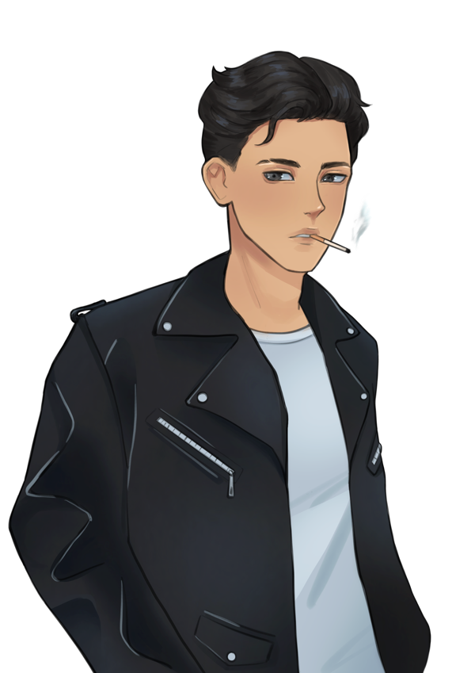

chapter 2
writing on the wall

In head-to-toe black, the stranger steps easily through the frame as it flashes green in approval. He weaves his way through the dazed crowd, heading straight for the bar. Nex switches the view to follow his steps. While the bartender is preoccupied at the opposite end, the intruder idles, fingers gripping the cool surface of the counter as one hand slips into his jacket.
Nex magnifies the scene. The object in his hand is flat and black – an envelope – which he adheres to the underside of the bar’s edge. Pushing himself off the surface, the stranger immerses himself once again in the swarm of people.
There’s a sobriety in his movements – the way he searches and hunts. Clutching patrons and peering at their features with intent. Releasing them with frustration before resuming his pursuit. He resists the natural flow of The Void, which sweeps over its guests in the desire to languish eternally within a temporal embrace.
Before Nex realises, a replica of the night’s earlier events is playing out: the violation of the Rule caught by the bartender and transmitted to his own earpiece; an inspection of himself in the third person as he alerts Ezri; the climax of the confrontation.
The pictures disappear with a click as Nex fingers the scrap of paper handed to him earlier.
He brings up the laptop screen, now illuminated by a full progress bar. Releasing an exhale, he reveals the account details linked to the serial number with a soft click.
Nex magnifies the scene. The object in his hand is flat and black – an envelope – which he adheres to the underside of the bar’s edge. Pushing himself off the surface, the stranger immerses himself once again in the swarm of people.
There’s a sobriety in his movements – the way he searches and hunts. Clutching patrons and peering at their features with intent. Releasing them with frustration before resuming his pursuit. He resists the natural flow of The Void, which sweeps over its guests in the desire to languish eternally within a temporal embrace.
Before Nex realises, a replica of the night’s earlier events is playing out: the violation of the Rule caught by the bartender and transmitted to his own earpiece; an inspection of himself in the third person as he alerts Ezri; the climax of the confrontation.
The pictures disappear with a click as Nex fingers the scrap of paper handed to him earlier.
He brings up the laptop screen, now illuminated by a full progress bar. Releasing an exhale, he reveals the account details linked to the serial number with a soft click.